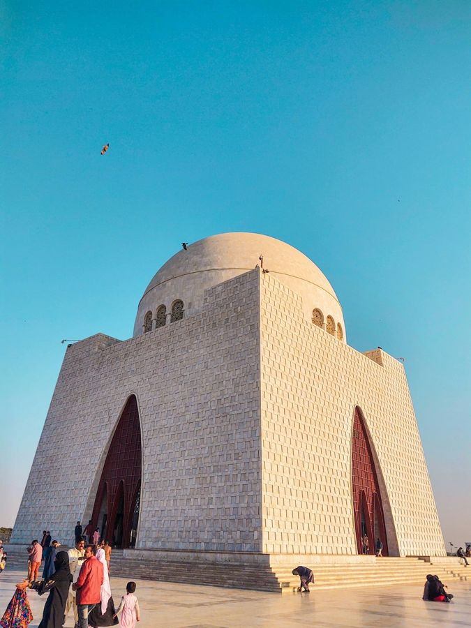

Izma Mohammad: Biomedical Engineer, Entrepreneur, Business Person, Woman in STEM, Educationist, Game Developer, Mentor, Educator, Free Soul, Cat Person
Let's Connect
YES!A Biomedical Engineering student, entrepreneur and education enthusiast, exploring ways to incorporate collaborative learning style in K12 and Higher Education.
As a Biomedical Engineering student, I am pivoting my focus towards medical simulations, digital twins, cancer diagnostics and therapeutic technologies.
As an education enthusiast, I am currently exploring the learning techniques that have been sidelined for decades and emphasizing the greater impact it will have on students' learning once brought back into the mainstream.

Karachi is a melting pot of everything...dust, traffic, noise, chaos and parks, trees, baarish and food~
On any stressful day, "ek cup doodh patti" always melts all the stress away. I can vouch that it's the same for any other Karachiite.
Driving in Karachi is an unmatched experience...a chore, in fact... every day, every ride is literally a mystery as we weave through tiny, hidden residential lanes that only God knows where they would take us, but somehow, in hours or so...we reach home.
What really keeps us and Karachi going is the belief in collective survival and biryani. When the heavy rains come and the streets completely flood, we don't sit around waiting for the authorities. Instead, you see locals out there with ropes, drenched to the bone, pushing strangers' stalled cars for absolutely nothing in return.
That beautiful, resilient, stubborn sense of collective survival (and love for food) is exactly why I love Karachi...it is tough, it is raw, but it has a massive heart that keeps me completely under its spell. Even as a Karachiite...I can't say I know all of Karachi (it's way too big!!!)